TOTAL ESTIMATED COST comparison
Aggregate comparison includes only unique HGAB project rows with one exact-title-matched POW file and a recovered I. TOTAL ESTIMATED COST. First-page A+B+C and bill-page D+E+F values are retained as evidence, not substituted for I.
How this comparison is calculated
Project-level comparison and review queue
Rows are sorted by the absolute difference when I is available. Projects without a recovered I are retained for review with their available subtotals identified. Multiple distinct POW files for one project are shown as review cases and excluded from totals.
| HGAB project / office | HGAB allocation | POW I. TOTAL ESTIMATED COST · As Submitted | POW printed date(s) | Difference · I − allocation | Difference % | POW file / basis |
|---|
Amounts that differ from HGAB
Mismatch-only summary for projects with comparable amounts. Matching amounts are left out.
Loading mismatch summary…
Combined amounts include one distinct extracted value per project. Projects with conflicting distinct source amounts are counted separately for review.
COI investigation: multi-project certificates and HGAB-only comparisons ↗
BP 202 and COI amount comparison
Each extracted BP 202 or COI project amount is compared with the HGAB allocation and recovered POW TEC. BP 202 is treated as 1:1. COIs can list multiple projects; when different COI sources report different amounts for a project, the source values remain visible for review instead of being collapsed into one figure. The table puts unmatched amounts first, ordered by largest peso difference from the HGAB allocation, then by higher HGAB allocation. If any directly linked BP 202 or COI amount matches the allocation, that document type counts as matched; competing nonmatching files are moved to review. Rows without a comparable amount follow.
Loading supporting-document amount results…
| HGAB project / office | HGAB allocation · House 3rd Reading | BP 202 printed date(s) | BP 202 amount(s) | COI printed date(s) | COI amount(s) |
|---|---|---|---|---|---|
| Loading project records… | |||||
Amounts show the parsed value, dates found in PDF text or OCR with page and context, and linked source PDF. Dates come from document content, not file timestamps. “Linked” records without a recovered amount are labeled with their parser status. Compare the listed values individually; multiple COI documents can describe different project scopes or revisions.
1. A complete file set can still hide a token POW
The Undocumented HGAB page counts matched files across five document types: BP 202, Certificate of Implementability, Development Council, geotagged photos and POW. These matches have different units: BP 202 is 1:1, while COI can cover multiple projects and Development Council records can follow the COI project list without carrying project costs. This is file-presence coverage; it does not check whether a matched POW contains item-level details. Here, a no-detail POW is a parsed file with zero recovered bill rows. A category-summary row with no bill rows is a summary-only candidate; no rows of either kind can also indicate a parser failure.
Comparing parsed POWs with 5/5 document records…
The adjusted count below treats a project as POW-content deficient when every accepted-title parsed POW for that project has zero recovered bill rows. This is a review flag, not source-PDF confirmation.
5/5 projects with no bill rows in any accepted-title parsed POW
| Project | 5/5 files | POW files with no bill rows | Parser signal |
|---|---|---|---|
| Loading 5/5 project comparisons… | |||
2. BP 202 and COI amounts against HGAB allocation and POW TEC
These document amounts add a second comparison beside the POW parsing and metadata review. BP 202 is matched 1:1 to a project. A COI can list multiple projects, so the same COI may support several project matches. Each extracted document amount is compared with that project’s HGAB allocation and recovered POW I. TOTAL ESTIMATED COST (TEC); source documents remain available in the project-level review.
Loading BP 202 and COI amount comparisons…
3. Identical document content across projects
Starting with confirmed photo-document reuse, this comparison finds cached Proposal and Senate HGAB PDFs whose complete file bytes are identical, even when their filenames differ. Photo groups are listed first, followed by the remaining document types.
Exact SHA-256 matches confirm identical cached PDF bytes. This identifies reused file content; it does not establish that the project scopes, locations, or uses are the same. Different source codes can map to one House ledger row; assignments show that mapping when available.
| Document type | Project folders with identical content | PDF size | SHA-256 |
|---|---|---|---|
| Loading exact-content matches… | |||
4. Visually similar geotagged photo sets
I visually compared the page images below. These three different Proposal project folders contain the same Taft Avenue drainage photo set, including matching scene compositions and coordinates. Their PDF SHA-256 hashes differ, so these are visual content matches beyond the exact-file SHA scan. This is a review tag, not an inference that the projects are duplicates or have the same scope.
| Project / document | Page 1 preview | Photo-set comparison |
|---|---|---|
| 2027DPWH-PROPOSAL-00391 Construction of Drainage along Taft Ave S02958LZ K0003 + 875 – K0002 + 532 Geotagged Pictures · SHA-256 7ddbfed354c21b5c7bc86d19c0505075105cad3f36b368f2ff6a0ac64b605b14 | Tagged as visually similar Three matching Taft Avenue street and drainage scenes appear in the same order across all three first pages. The 00393 and 33478 sets also continue with matching images on pages 2–8. The complete PDFs have different SHA-256 hashes. | |
| 2027DPWH-PROPOSAL-00393 Construction of Drainage along Taft Ave S02958LZ K0004 + (−330) – K0003 + 875 Geotagged Pictures · SHA-256 38a12e1e712de789558ec943fa03c98a7a47e61aeede49c69f2b92ffe07ac431 | 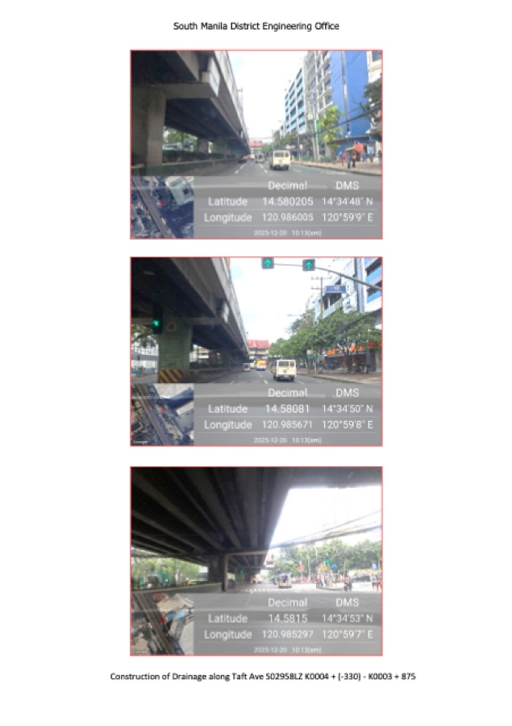 | |
| 2027DPWH-PROPOSAL-33478 Improvement of Road and Drainage System along Taft Ave. (From UN Ave. to Ayala Blvd.), Manila City Geotagged Photos · SHA-256 e1aab88645773803cda2834ea0ce840f3d1cffd82ebdfa44a9c4f8cf4ed57da4 | 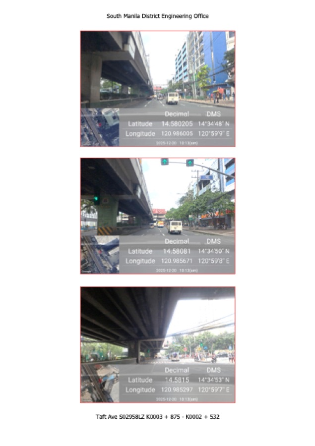 |


Inspect matching pages 2–8 in Proposals 00393 and 33478
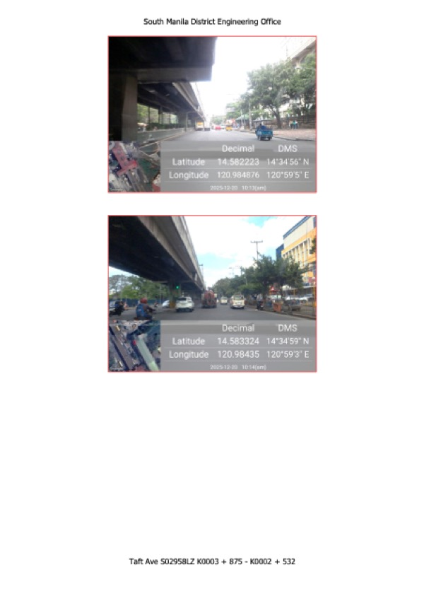
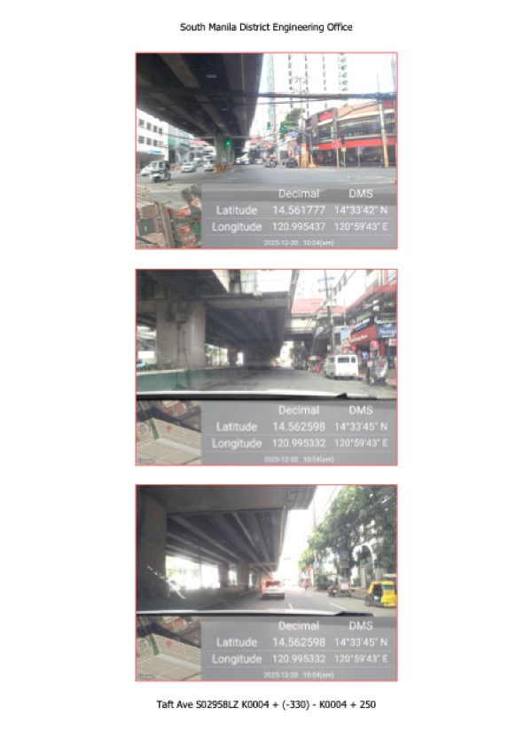
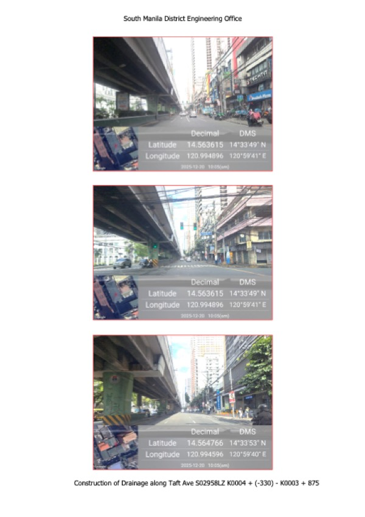
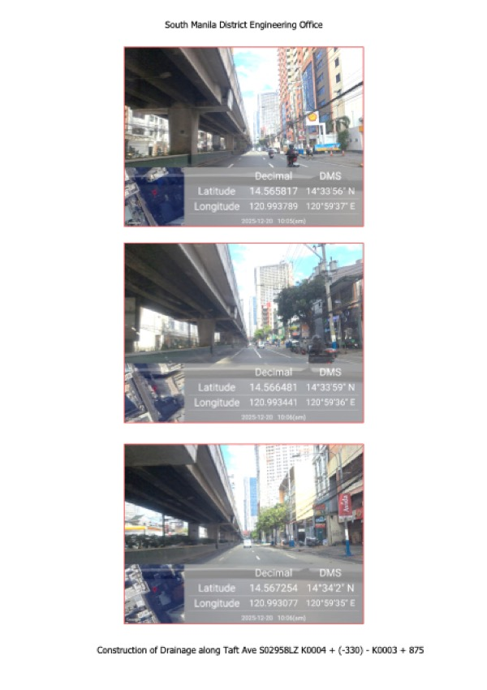
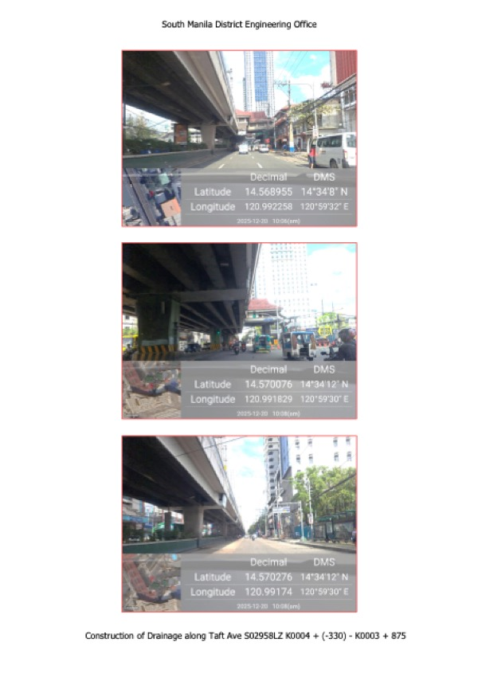
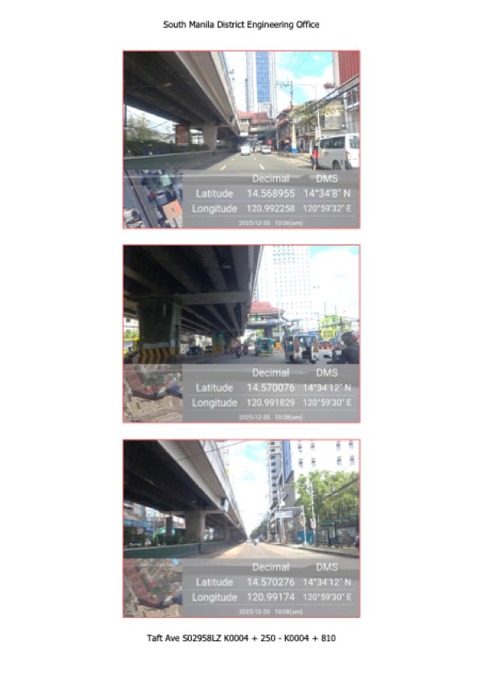
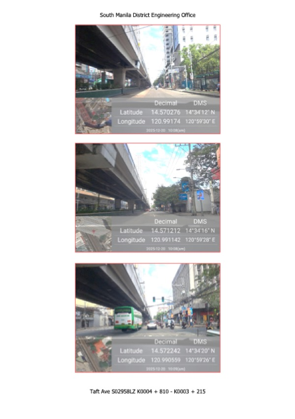
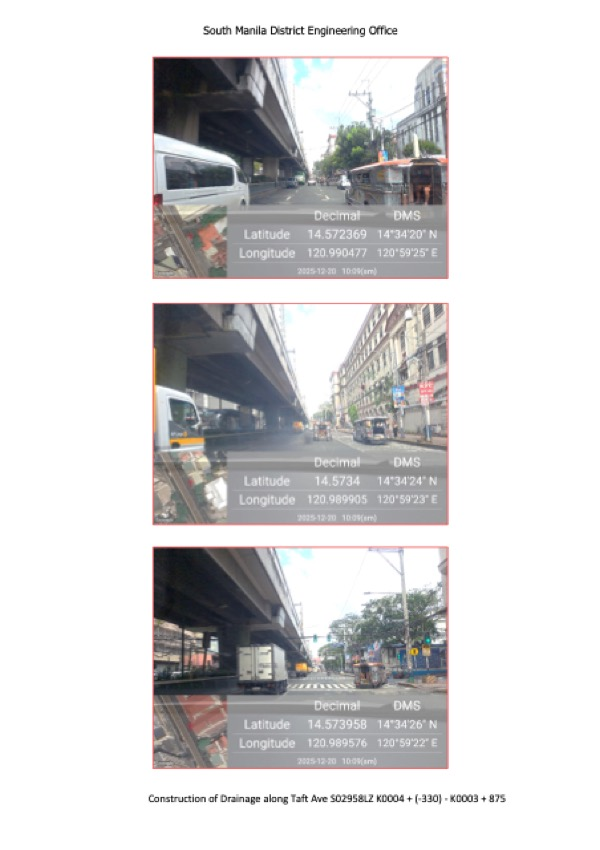
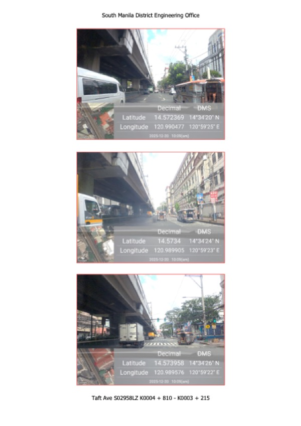
Scope: this section shows visually confirmed matches from the photo PDFs reviewed so far. A match means the displayed photo content appears reused; it does not merge project records. The previously mentioned Bridge Santo Niño and Mabini Public Market examples are not tagged here because a matching photo set between those projects has not been visually confirmed.